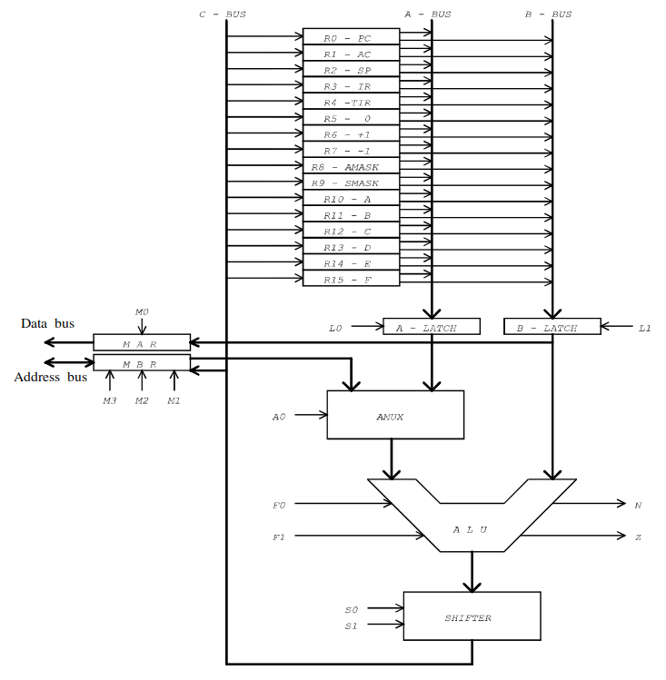

This decoder decodes all MIC-1 microinstructions entered in the binary format given bellow. However, it will also try to decode invalid MIC-1 microinstructions, so beware!
Simply enter the 32-bit binary string in the field below, and click on "Decode" to get your MIC-1 microinstruction. The decoder has been tested, but please be aware that errors are still possible!
AMUX
COND
ALU
SH
MBR
MAR
RD
WR
ENC
C
B
A
ADDRESS
Decoded microinstruction:
MIC-1 Explained:
The MIC-1 microarchitecture is very simple. It was created by Tanenbaum, and is modeled after the AMD 2900 bitslice microprocessor series. It operates on 16-bit words, has 16 registers and 32-bit instructions. A schema of the MIC-1 microarchitecture is given below.

In order to decode a MIC-1 microinstruction, some simple rules need to be followed. First, every microinstruction consists (at most) of 6 parts: The mar enty, the we entry, the mbr entry, the alu entry, the rd entry, and the goto entry, in this particular order. Let's explain every part:
The mar entry is the part of the microinstruction that writes to mar. If mar is set to 1, then the mar entry will look like this: mar = b (where b is whatever is in the b-latch);
The wr entry is only present in the microinstruction if wr is set to 1. If wr is one, then the wr part will look like this: wr. If wr is 0, then this entry is not part of the microinstruction;
The mbr entry is active iff mbr is set to 1. In that case, the mbr entry will look like this: mbr = OP (where OP is whatever comes out of the ALU, e.g. mbr = E + AC);
The alu entry is active iff enc is set to 1. In that case, the alu entry will look like this: c = OP (where OP is whatever comes out of the ALU, and c is the whatever is selected on the c bus);
The rd entry is only present if rd is set to 1. In that case, it looks like this: rd. If rd is 0, then this entry is not part of the microinstruction;
The goto entry is only present if the cond field is anything but 00. The goto entry looks like this: [if N/Z] then goto addr (where for cond = 01 we have N, for cond = 10 we have Z, and for cond = 11 we have no conditions);
Now let's see how we decode instructions. First we take a look at the AMUX field, which can be 0 or 1. If this field is 0, then our ALU operands are defined by a and b. If this field is 1, then the ALU operands are defined by mbr and b. That means that, after examining AMUX, we can determine what goes into the ALU (note that b always goes into the ALU).
Next, we can determine the ALU operation by looking at the ALU field. If it is set to 00, then we have addition, that is the ALU operation is operand1 + operand2. If it is set to 01, then the ALU operation is binary and, which is denoted as band(operand1, operand2). If ALU is 10, then we simply pass operand1 (operand2 is not used here). Finally, if ALU is 11, then operand1 gets negated, denoted as inv(operand1) (again, operand2 is not used).
Now that we have determined the operation of the ALU (let's call it ALU_OP), we can determine if the result of that operation needs to get shifted. To do that, we look at the SH field. If it is 00, then no shifting is to be done, that is ALU_OP stays as it is. If it is 01, then we need to perform right shifting of ALU_OP. In that case, ALU_OP becomes rshift(ALU_OP) (e.g. rshift(neg(SP))). For 10, we have left shift, denoted by lshift(ALU_OP). Finally, 11 determines that the shifter is not used (this can only happen if the ALU is not active at all).
Now that we have our final ALU operation, all that is left do to is to determine where to write. If mbr is set to 1, then we write to mbr, that is, mbr = ALU_OP. If ENC is set to 1, then we also write to whatever is in c (e.g. SP = ALU_OP). If mar is set to 1, then we write operand2 to MAR (note that we write operand2, and not ALU_OP!), that is, mar = operand2.
Don't forget to check if rd or wr are set to 1. In that case, your instruction needs to have rd; and wr; entries, respectively.
Finally, we need to check if goto needs to be performed. We can do that by looking at the COND field. If COND is 00, then no goto should be performed. If COND is 01, then we goto for N (that is, we write if N then goto addr). If COND is 10, then we goto for Z. Finally, if COND is 11, then we write an unconditional goto (e.g. goto addr). In this context, addr is the address field of the microinstruction (the last 8 bits). After all these parts have been analysed, they can be aligned together in the order listed above to form the final microinstruction.